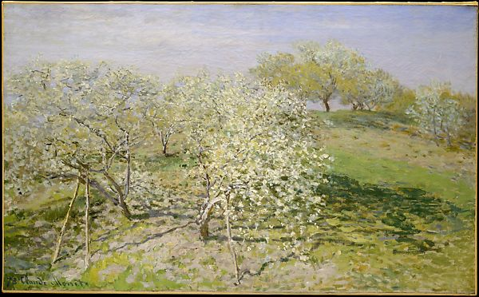

<head>
<meta charset="UTF-8" />
<meta name="keywords" content="drawing, painting" />
<meta name="description" content="drawings by Sunjy" />
<title>Sunjy</title>
<link rel="shortcut icon" type="image/x-icon" href="../../mImages/mCommon/favicon.ico" media="screen" />
<link rel="stylesheet" type="text/css" href="../../mCsses/mCommon/mCssA.css" />
<link rel="stylesheet" type="text/css" href="../../mCsses/mCommon/mCssB.css" />
<link rel="stylesheet" type="text/css" href="../../mCsses/mCommon/mCssC.css" />
<link rel="stylesheet" type="text/css" href="../../mCsses/mCommon/mCssD.css" />
<link rel="stylesheet" type="text/css" href="../../mCsses/mContent/mCssA.css" />
<link rel="stylesheet" type="text/css" href="../../mCsses/mContent/mCssB.css" />
<link rel="stylesheet" type="text/css" href="../../mCsses/mContent/mCssC.css" />
<link rel="stylesheet" type="text/css" href="../../mCsses/mContent/mCssD.css" />
</head>
<script type="text/javascript" src="../../mScripts/mContent/mContentAA.js" /></script>
<script type="text/javascript" src="../../mScripts/mContent/mContentAB.js" /></script>
<script type="text/javascript" src="../../mScripts/mContent/mContentAC.js" /></script>
<script type="text/javascript" src="../../mScripts/mContent/mContentAD.js" /></script>
<script type="text/javascript"></script> 
<script type="text/javascript">
document.write('<div class="mImgAbsolute"></div>');
/*
document.write('<p class="mFontSizeBColor" />From a white paper...</p>');
document.write('<table class="center"><tr><td>');
document.write('');
document.write('</td></tr></table>');
*/
</script>


<script type="text/javascript">
document.write('<p class="mFontSizeBColor" />Spring (Fruit Trees in Bloom)</p>');
document.write('<p class="mFontSizeSColor" />By Claude Monet, ca. 1873. Monet made this work in the vicinity of his home in Argenteuil, a village on the Seine northwest of Paris that was a favorite gathering place of the Impressionists. Although the scene has previously been called <i>Plum Blossoms</i> and <i>Apples Trees in Bloom</i>, the type of tree cannot be determined from the flurry of white buds evoked by the artist. The pastel shades of spring and the clear light inspired him to represent nature almost purely in terms of color. This was the first painting by Monet to enter the Museum’s collection, via bequest in 1926.</p>');
document.write('<table class="center" /><tr><td>');
document.write('Plum Blossoms</i> and <i>Apples Trees in Bloom</i>, the type of tree cannot be determined from the flurry of white buds evoked by the artist. The pastel shades of spring and the clear light inspired him to represent nature almost purely in terms of color. This was the first painting by Monet to enter the Museum’s collection, via bequest in 1926." />');
document.write('</td></tr></table>');
</script>


